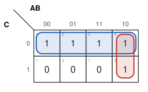
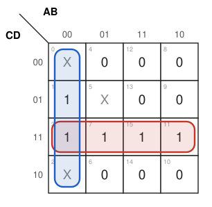
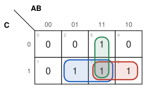
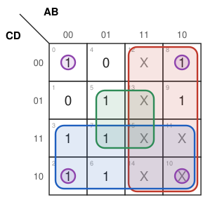

Cuaderno de Síntesis
Unidad 1 — Análisis de lógica combinacional con diseño clásico
Este cuaderno consolida las lecturas, las prácticas APE 01–05 y los apuntes de clase de las semanas 1 a 5. Cada técnica estudiada incluye un circuito resuelto paso a paso. Al final está el registro de dudas pendientes.
Mapa de la unidad
Todas las semanas aplican el mismo procedimiento. Cambia la herramienta que se usa en cada paso:
| Semana | Contenido | Práctica (APE) | Circuito resuelto en este cuaderno |
|---|---|---|---|
| 1 | Sistemas numéricos, códigos y compuertas | APE 01 | Conversiones, complemento a 2 y verificación de las 7 compuertas |
| 2 | Álgebra de Boole y formas canónicas | APE 02 | Alarma de tres sensores (canónica vs. simplificada) |
| 3 | Mapas de Karnaugh, condiciones indiferentes, NAND/NOR | APE 03 | Función de 4 variables con don't cares implementada solo con NAND |
| 4 | Semisumador, sumador completo, sumador paralelo, resta, comparador | APE 04 | Sumador completo, sumador/restador de 4 bits y comparador |
| 5 | MUX, DEMUX, codificador, decodificador, display 7 segmentos | APE 05 | Función con MUX 8:1 y 4:1, segmento a del decodificador BCD |
| 6 | Consolidación y evaluación sumativa | 1.er avance PIS | Procedimiento general, errores frecuentes y repaso |
Sistemas numéricos, códigos y compuertas lógicas
Un computador representa toda la información con dos estados eléctricos (bajo = 0, alto = 1). Para leer y escribir esos patrones cómodamente usamos varias bases y códigos.
1.1 Sistemas de numeración
| Sistema | Base | Dígitos | Uso típico |
|---|---|---|---|
| Binario | 2 | 0, 1 | Lo que realmente maneja el hardware |
| Octal | 8 | 0–7 | Agrupa 3 bits |
| Decimal | 10 | 0–9 | Uso humano |
| Hexadecimal | 16 | 0–9, A–F | Agrupa 4 bits (direcciones, colores, ASCII) |
- Decimal → base b: divisiones sucesivas entre b. Los residuos, leídos de abajo hacia arriba, forman el número. Para la parte fraccionaria se multiplica sucesivamente por b.
- Base b → decimal: suma de cada dígito por su peso bi.
- Binario ↔ octal/hex: se agrupan bits de 3 en 3 (octal) o de 4 en 4 (hex) desde el punto binario.
| División | Cociente | Residuo |
|---|---|---|
| 157 ÷ 2 | 78 | 1 |
| 78 ÷ 2 | 39 | 0 |
| 39 ÷ 2 | 19 | 1 |
| 19 ÷ 2 | 9 | 1 |
| 9 ÷ 2 | 4 | 1 |
| 4 ÷ 2 | 2 | 0 |
| 2 ÷ 2 | 1 | 0 |
| 1 ÷ 2 | 0 | 1 |
Leyendo los residuos de abajo hacia arriba:
157₁₀ = 1001 1101₂
Octal (grupos de 3): 010 011 101 → 235₈
Hexadecimal (grupos de 4): 1001 1101 → 9D₁₆
Comprobación: 128 + 16 + 8 + 4 + 1 = 157 ✓
Con fracción: 101101.101₂ = 32 + 8 + 4 + 1 + 0.5 + 0.125 = 45.625₁₀
1.2 Aritmética binaria y complemento a dos
Reglas de la suma: 0+0 = 0, 0+1 = 1, 1+1 = 0 con acarreo 1, y 1+1+1 = 1 con acarreo 1.
Complemento a dos (C2) de un número de n bits: se invierten todos los bits (complemento a uno) y se suma 1. En C2 el bit más significativo es el signo, y con 8 bits el rango va de −128 a +127. La ventaja es que restar se reduce a sumar: A − B = A + C2(B).
| Paso | Valor |
|---|---|
| +45 | 0010 1101 |
| Complemento a uno (invertir) | 1101 0010 |
| +1 → C2(45) = −45 | 1101 0011 |
| +60 | 0011 1100 |
| 60 + (−45) | 1 0000 1111 |
| Se descarta el acarreo final | 0000 1111 = 15 ✓ |
1.3 Códigos binarios
| Código | Idea | Ejemplo |
|---|---|---|
| BCD 8421 | Cada dígito decimal se codifica con 4 bits. Las combinaciones 1010–1111 no se usan. | 157 → 0001 0101 0111 |
| Gray | Dos valores consecutivos difieren en un solo bit (útil en encoders y en el orden de los K-maps). gn−1 = bn−1, gi = bi+1 ⊕ bi | 1011₂ → 1110 Gray 1110 Gray → 1011₂ |
| ASCII | 7 bits por carácter. Una mayúscula y su minúscula difieren solo en el bit 5 (0x20). | 'A' = 65 = 0x41 = 100 0001 'a' = 0x61 · '0' = 0x30 |
1.4 Las siete compuertas lógicas
* El 74LS266 tiene salidas de colector abierto: necesita una resistencia de pull-up en cada salida.
| A | B | AND | OR | NAND | NOR | XOR | XNOR | NOT A |
|---|---|---|---|---|---|---|---|---|
| 0 | 0 | 0 | 0 | 1 | 1 | 0 | 1 | 1 |
| 0 | 1 | 0 | 1 | 1 | 0 | 1 | 0 | 1 |
| 1 | 0 | 0 | 1 | 1 | 0 | 1 | 0 | 0 |
| 1 | 1 | 1 | 1 | 0 | 0 | 0 | 1 | 0 |
Lectura de la hoja de datos (familia 74LS): encapsulado DIP-14, VCC = +5 V en el pin 14 y GND en el pin 7. El 74LS00, 08, 32 y 86 traen 4 compuertas de 2 entradas; el 74LS04 trae 6 inversores; el 74LS02 tiene el pinout invertido (salida en los pines 1, 4, 10 y 13). En Logisim cada compuerta se verificó con dos interruptores en las entradas y una sonda o LED en la salida, recorriendo las 4 combinaciones.
Álgebra de Boole y formas canónicas
Un circuito y una expresión booleana son lo mismo escrito de dos maneras. Simplificar la expresión equivale a ahorrar compuertas.
2.1 Postulados y teoremas
| Ley | Forma OR | Forma AND (dual) |
|---|---|---|
| Identidad | A + 0 = A | A · 1 = A |
| Nulo / dominación | A + 1 = 1 | A · 0 = 0 |
| Idempotencia | A + A = A | A · A = A |
| Complemento | A + A = 1 | A · A = 0 |
| Involución | A = A | |
| Conmutativa | A + B = B + A | AB = BA |
| Asociativa | A + (B + C) = (A + B) + C | A(BC) = (AB)C |
| Distributiva | A(B + C) = AB + AC | A + BC = (A + B)(A + C) |
| Absorción | A + AB = A | A(A + B) = A |
| Absorción del complemento | A + AB = A + B | A(A + B) = AB |
| Consenso | AB + AC + BC = AB + AC | — |
| De Morgan | A + B = A · B | A · B = A + B |
2.2 Minitérminos, maxitérminos y formas canónicas
- Minitérmino mi: producto (AND) de todas las variables que vale 1 solo en la fila i. Una variable que vale 0 en esa fila va negada.
- Maxitérmino Mi: suma (OR) de todas las variables que vale 0 solo en la fila i. Una variable que vale 1 en esa fila va negada.
- Suma de productos (SdP) canónica: F = Σm(filas donde F = 1).
- Producto de sumas (PdS) canónico: F = ΠM(filas donde F = 0).
- ¿Cuál conviene? La que tenga menos términos: SdP si hay pocos unos, PdS si hay pocos ceros.
Requerimiento: una bodega tiene tres sensores: A (puerta), B (ventana) y C (movimiento). Para evitar falsas alarmas, la sirena debe activarse solo cuando al menos dos sensores detectan intrusión.
Paso 1 · Tabla de verdad
| Fila | A | B | C | Alarma | Término |
|---|---|---|---|---|---|
| 0 | 0 | 0 | 0 | 0 | M₀ |
| 1 | 0 | 0 | 1 | 0 | M₁ |
| 2 | 0 | 1 | 0 | 0 | M₂ |
| 3 | 0 | 1 | 1 | 1 | m₃ |
| 4 | 1 | 0 | 0 | 0 | M₄ |
| 5 | 1 | 0 | 1 | 1 | m₅ |
| 6 | 1 | 1 | 0 | 1 | m₆ |
| 7 | 1 | 1 | 1 | 1 | m₇ |
Paso 2 · Formas canónicas
SdP: Alarma = Σm(3, 5, 6, 7)
ABC + ABC + ABC + ABC
PdS: Alarma = ΠM(0, 1, 2, 4)
(A+B+C)(A+B+C)(A+B+C)(A+B+C)
Paso 3 · Simplificación algebraica
Por idempotencia, ABC = ABC + ABC + ABC. Se reparte una copia a cada término:
- (ABC + ABC) + (ABC + ABC) + (ABC + ABC)
- BC(A + A) + AC(B + B) + AB(C + C)
- BC·1 + AC·1 + AB·1
Alarma = AB + AC + BC
Paso 4 · Esquemas
Paso 5 · Recuento de compuertas y CI
| Versión | Compuertas | Circuitos integrados | N.º de CI |
|---|---|---|---|
| Canónica | 8 | 74LS04 (3 NOT) + 2×74LS11 (4 AND-3) + 74LS32 (OR-4 en cascada: 3 OR-2) | 4 |
| Simplificada | 4 | 74LS08 (3 AND-2) + 74LS32 (OR-3 en cascada: 2 OR-2) | 2 |
Mapas de Karnaugh y universalidad de NAND/NOR
El problema de la simplificación algebraica es que no indica cuándo se llegó a la expresión mínima. El mapa de Karnaugh ordena la tabla de verdad de forma que la simplificación se ve geométricamente.
3.1 Reglas del mapa de Karnaugh
- Las filas y columnas van en código Gray (00, 01, 11, 10), de modo que las celdas vecinas difieren en una sola variable. Los bordes opuestos también son vecinos.
- Se agrupan los unos (para SdP) o los ceros (para PdS) en rectángulos de 1, 2, 4, 8… celdas (potencias de 2).
- Los grupos deben ser lo más grandes posible y hay que usar la menor cantidad de grupos que cubran todos los unos.
- De cada grupo se conservan solo las variables que no cambian dentro de él.
- Las condiciones indiferentes (X) se toman como 1 si ayudan a agrandar un grupo; si no ayudan, se dejan fuera.

Grupo azul (fila C = 0, 4 celdas): C
Grupo rojo (columna AB = 10): AB
F = C + AB
Por álgebra: C(AB + AB + AB + AB) + ABC = C + ABC = C + AB. Para llegar al mismo resultado hay que darse cuenta de que se puede aplicar la absorción del complemento; el mapa lo muestra directamente.
3.2 Universalidad de NAND y NOR
Cualquier función se puede construir solo con NAND o solo con NOR, porque con cada una se obtienen NOT, AND y OR:
| Función | Solo NAND | Solo NOR |
|---|---|---|
| NOT A | NAND(A, A) | NOR(A, A) |
| A · B | NAND(NAND(A,B), NAND(A,B)) | NOR(A, B) |
| A + B | NAND(A, B) | NOR(NOR(A,B), NOR(A,B)) |
Función: F(A,B,C,D) = Σm(1, 3, 7, 11, 15) + d(0, 2, 5)

Grupo rojo (m3, m7, m11, m15): A y B cambian; C = 1 y D = 1 → CD
Grupo azul (d0, m1, d2, m3): C y D cambian; A = 0 y B = 0 → AB
La indiferente d5 no ayuda a formar un grupo más grande, así que se toma como 0.
F = AB + CD
En PdS el resultado mínimo es (A+C)(A+D)(B+C)(B+D), con 4 términos en vez de 2, así que conviene la SdP.
Paso a NAND-NAND
F = (AB) · (CD) = NAND( NAND(A, B), NAND(C, D) )
| Versión | Compuertas | N.º de CI |
|---|---|---|
| Canónica sin minimizar (5 minitérminos) | 4 NOT + 5 AND-4 + 1 OR-5 | ≥ 6 |
| Mínima AND-OR | 5 | 3 |
| Mínima solo NAND | 5 | 2 (3 compuertas libres) |
Bloques combinacionales aritméticos
Un circuito sin memoria puede sumar. El problema central de todo sumador es el acarreo. Estos bloques forman la base de la unidad aritmético-lógica (ALU) de un procesador.
4.1 Semisumador (half adder)
| A | B | C (acarreo) | S (suma) |
|---|---|---|---|
| 0 | 0 | 0 | 0 |
| 0 | 1 | 0 | 1 |
| 1 | 0 | 0 | 1 |
| 1 | 1 | 1 | 0 |
S = A ⊕ B C = A · B
No tiene entrada de acarreo, así que solo sirve para el bit menos significativo.
| A | B | Cin | Cout | S |
|---|---|---|---|---|
| 0 | 0 | 0 | 0 | 0 |
| 0 | 0 | 1 | 0 | 1 |
| 0 | 1 | 0 | 0 | 1 |
| 0 | 1 | 1 | 1 | 0 |
| 1 | 0 | 0 | 0 | 1 |
| 1 | 0 | 1 | 1 | 0 |
| 1 | 1 | 0 | 1 | 0 |
| 1 | 1 | 1 | 1 | 1 |
Suma: S = Σm(1,2,4,7). En el mapa forma un tablero de ajedrez y no admite agrupación, lo que delata una XOR:
S = A ⊕ B ⊕ Cin
Acarreo: Cout = Σm(3,5,6,7). Es la misma función de mayoría que la alarma de la semana 2:

Cout = AB + ACin + BCin = AB + Cin(A ⊕ B)
Se prefiere la segunda forma porque reutiliza la XOR A ⊕ B que ya existe para la suma. Así, el sumador completo equivale a dos semisumadores y una OR.
4.2 Sumador paralelo de 4 bits (acarreo en cascada)
| Bit | Ai | Bi | Ci (entra) | Si | Ci+1 (sale) |
|---|---|---|---|---|---|
| 0 | 0 | 1 | 0 | 1 | 0 |
| 1 | 1 | 1 | 0 | 0 | 1 |
| 2 | 1 | 1 | 1 | 1 | 1 |
| 3 | 0 | 0 | 1 | 1 | 0 |
Resultado: C₄ = 0, S = 1101 = 13 ✓
Estimación del retardo: si cada compuerta tarda tp, la primera etapa produce su acarreo en 3 niveles (XOR → AND → OR) y cada etapa siguiente añade 2 niveles (AND → OR). Para 4 bits: 3 + 2·3 = 9 tp. Con un valor de referencia de tp ≈ 10 ns para 74LS, C₄ queda estable después de unos 90 ns. El retardo crece linealmente con el número de bits, y por eso existe el acarreo anticipado (carry look-ahead).
4.3 Resta por complemento a dos: sumador/restador
Como A − B = A + B + 1, basta con una XOR por bit controlada por una señal M. Con M = 0 se tiene B ⊕ 0 = B y C₀ = 0, es decir, una suma. Con M = 1 se tiene B ⊕ 1 = B y C₀ = 1, es decir, una resta.
B ⊕ M = 1100, C₀ = 1 → 0111 + 1100 + 1 = 1 0100 → se descarta C₄ → 0100 = 4 ✓
4.4 Comparador de magnitud
Para 1 bit: (A = B) = A ⊕ B (XNOR), (A > B) = AB, (A < B) = AB.
Para 2 bits, con xi = Ai ⊕ Bi:
(A = B) = x₁ · x₀
(A > B) = A₁B₁ + x₁ A₀B₀
(A < B) = A₁B₁ + x₁ A₀B₀
Se compara desde el bit más significativo y solo se mira el siguiente bit si los anteriores son iguales. Versión integrada: 74LS85 (4 bits, conectable en cascada).
Selección y codificación de datos
Un sistema digital necesita encaminar datos entre varias fuentes y destinos (MUX/DEMUX) y convertir entre representaciones de la misma información (codificador/decodificador).
5.1 Resumen de bloques
| Bloque | Qué hace | Ecuación / característica | CI 74LS |
|---|---|---|---|
| MUX 2n:1 | Elige 1 de 2n entradas según n líneas de selección | 4:1 → Y = S₁S₀I₀ + S₁S₀I₁ + S₁S₀I₂ + S₁S₀I₃ | 151 (8:1), 153 (2×4:1), 157 (4×2:1) |
| DEMUX 1:2n | Envía una entrada a 1 de 2n salidas (operación dual del MUX) | Yi = D · mi(S) | 155, 138 |
| Decodificador n:2n | Activa la salida cuyo índice coincide con la entrada | Cada salida es un minitérmino | 138 (3:8, salidas activas en bajo) |
| Codificador 2n:n | Devuelve el código de la entrada activa | Con prioridad: gana la de mayor índice | 148 (8:3 con prioridad) |
| Decodificador BCD → 7 seg. | Convierte un dígito BCD en los segmentos a–g | 10 combinaciones válidas, 6 indiferentes | 48 (cátodo común), 47 (ánodo común) |
Las variables van a las líneas de selección (A = S₂, B = S₁, C = S₀). En cada entrada Ii se pone el valor de F en la fila i. No hace falta minimizar.
| A | B | C | F |
|---|---|---|---|
| 0 | 0 | 0 | 0 |
| 0 | 0 | 1 | 1 |
| 0 | 1 | 0 | 1 |
| 0 | 1 | 1 | 0 |
| 1 | 0 | 0 | 1 |
| 1 | 0 | 1 | 0 |
| 1 | 1 | 0 | 0 |
| 1 | 1 | 1 | 1 |
Esta F es A ⊕ B ⊕ C (impar de unos). Su mapa de Karnaugh es un tablero de ajedrez sin grupos posibles, el peor caso para compuertas AND-OR y el mejor caso para usar un MUX.
Variante con MUX 4:1 (A y B en selección, C como dato)
| A B | F con C = 0 | F con C = 1 | Entrada Ii |
|---|---|---|---|
| 00 → I₀ | 0 | 1 | C |
| 01 → I₁ | 1 | 0 | C |
| 10 → I₂ | 1 | 0 | C |
| 11 → I₃ | 0 | 1 | C |
| Solución | Componentes | Observación |
|---|---|---|
| Compuertas | 2 XOR (1×74LS86) | Requiere reconocer el patrón XOR |
| MUX 8:1 | 1×74LS151 | Directo desde la tabla, sin minimizar |
| MUX 4:1 | ½×74LS153 + 1 inversor | Usa un MUX más pequeño a cambio de un inversor |
El segmento a se enciende en los dígitos 0, 2, 3, 5, 6, 7, 8 y 9, y se apaga en 1 y 4. Las combinaciones 10–15 no son BCD válidas y se tratan como X.

A (columnas 11–10, usando X) · C (filas 11–10) · BD (centro) · BD (las 4 esquinas)
a = A + C + BD + BD = A + C + B ⊕ D
Sin las condiciones indiferentes harían falta más términos. Las X permiten que A aparezca sola. Los otros seis segmentos se diseñan de la misma forma; el 74LS48 ya los trae resueltos en un solo integrado.
Consolidación de la unidad
El repaso se centró en dos dificultades: pasar del requerimiento a la expresión mínima, y elegir entre compuertas y bloques funcionales.
6.1 Procedimiento general de diseño combinacional
- Especificar: identificar entradas, salidas y su significado (qué representa cada 1). Revisar que el enunciado no tenga ambigüedades.
- Tabular: llenar la tabla de verdad con las 2n combinaciones y marcar con X las que no pueden ocurrir.
- Expresar: escribir Σm o ΠM. Usar SdP si hay pocos unos y PdS si hay pocos ceros.
- Minimizar: con un mapa de Karnaugh (hasta 4 variables) o con álgebra. Aprovechar las X.
- Elegir la implementación: AND-OR, solo NAND o solo NOR, o un bloque (MUX o decodificador). El criterio explícito es el costo: número de compuertas, número de CI y niveles de retardo.
- Predecir y verificar: antes de simular, anotar la salida esperada. Luego simular en Logisim todas las combinaciones y explicar cualquier diferencia en lugar de ocultarla.
6.2 ¿Compuertas o bloques funcionales?
| Situación | Conviene |
|---|---|
| La función se simplifica mucho (grupos grandes en el K-map) | Compuertas (pocas y rápidas) |
| La función no se simplifica (tablero de ajedrez, XOR) | MUX, o compuertas XOR si se reconoce el patrón |
| Varias salidas sobre las mismas entradas | Decodificador + compuertas OR (comparte los minitérminos) |
| Hay que cambiar la función a menudo | MUX: solo se cambian los valores de las entradas de datos |
| Se requiere una sola familia de compuertas | Conversión a NAND-NAND o NOR-NOR |
6.3 Errores frecuentes detectados en la unidad
| Error | Cómo evitarlo |
|---|---|
| Ordenar el K-map en binario (00, 01, 10, 11) en vez de Gray | Las etiquetas siempre van 00, 01, 11, 10 |
| Formar grupos de 3 o de 6 celdas | Solo potencias de 2: 1, 2, 4, 8 |
| Olvidar que los bordes y las esquinas son adyacentes | Revisar siempre los bordes opuestos y las 4 esquinas |
| Usar las X como obligatorias | Una X se usa solo si agranda un grupo |
| Negar al revés en los maxitérminos | En Mi se niega la variable que vale 1 en la fila |
| Aplicar De Morgan sin cambiar el operador | «Se rompe la barra y se cambia el signo» |
| No descartar el acarreo final en una resta en C2 | En una resta en C2 el acarreo de salida se ignora |
| Confundir los pines del 74LS02 con los del 74LS00 | Consultar siempre la hoja de datos: el 02 tiene la salida primero |
| Dejar entradas sin conectar en la simulación (estado X/azul en Logisim) | Toda entrada debe ir a una constante, un interruptor o una salida |
6.4 Aporte al Proyecto Integrador de Saberes
En el primer avance del proyecto, el Grupo 8 presentó la especificación funcional del sistema, su tabla de verdad, su expresión mínima y su esquema combinacional simulado. Nuestro sistema trabaja sobre una ALU. Los bloques de esta unidad (sumador/restador por C2, comparador y selección con MUX de la operación) forman el núcleo combinacional sobre el que se añadirá la parte secuencial en la Unidad 2 y la descripción en VHDL en la Unidad 3.
Ejercicios de repaso con solución
Ejercicios para preparar la evaluación sumativa. Cada solución está oculta: haz clic en el ejercicio para mostrarla.
1. Convierte 213₁₀ a binario, octal y hexadecimal. S1
213 = 128 + 64 + 16 + 4 + 1 → 1101 0101₂ · octal: 011 010 101 → 325₈ · hex: 1101 0101 → D5₁₆
2. Representa −100 en complemento a dos con 8 bits. S1
+100 = 0110 0100 → invertido: 1001 1011 → +1 → 1001 1100
3. Convierte 0110₂ a código Gray. S1
g₃ = 0, g₂ = 0⊕1 = 1, g₁ = 1⊕1 = 0, g₀ = 1⊕0 = 1 → 0101
4. Expresa F = AB + AC en forma canónica SdP y PdS. S2
AB cubre 010 y 011 (m2, m3). AC cubre 101 y 111 (m5, m7).
F = Σm(2, 3, 5, 7) = ΠM(0, 1, 4, 6)
5. Simplifica A + BC con De Morgan. S2
A · BC = A(B + C) = AB + AC
6. Minimiza F(A,B,C,D) = Σm(0, 2, 5, 7, 8, 10, 13, 15). S3
Las 4 esquinas (0, 2, 8, 10) dan BD. El bloque central (5, 7, 13, 15) da BD.
F = BD + BD = B ⊕ D (A y C no influyen)
7. Implementa F = A + B usando solo NOR. S3
A + B = A + B = NOR( NOR(A, B), NOR(A, B) ) → 2 compuertas NOR
8. Suma 1011 + 0110 con un sumador de 4 bits. ¿Hay acarreo de salida? S4
11 + 6 = 17 → S = 0001 con C₄ = 1. El resultado no cabe en 4 bits sin signo.
9. Implementa F(A,B,C) = Σm(0, 1, 3, 6) con un MUX 4:1 (A y B en selección). S5
AB = 00: m0 = 1, m1 = 1 → I₀ = 1 · AB = 01: m2 = 0, m3 = 1 → I₁ = C · AB = 10: m4 = 0, m5 = 0 → I₂ = 0 · AB = 11: m6 = 1, m7 = 0 → I₃ = C
10. ¿Cuántos decodificadores 2:4 hacen falta para un 4:16? S5
5: un 2:4 para los dos bits altos, que habilita a uno de cuatro 2:4 conectados a los dos bits bajos.
Registro de dudas pendientes
| # | Duda | Tema | Qué haré para resolverla |
|---|---|---|---|
| 1 | Si una combinación marcada como X llega a ocurrir en el hardware real (por ejemplo, BCD 1100), ¿qué muestra el display? ¿Puede causar problemas? | S3 / S5 | Probar en Logisim las entradas 10–15 en el 74LS48 y consultar en tutoría |
| 2 | ¿Cómo funciona por dentro el acarreo anticipado del 74LS283 y cuánto más rápido es que el de cascada? | S4 | Leer el apartado de circuitos aritméticos del texto base |
| 3 | ¿Pueden aparecer pulsos falsos (glitches) en la salida cuando cambian dos entradas casi al mismo tiempo en un circuito minimizado? | S3 | Consultar al docente sobre riesgos estáticos |
| 4 | ¿Cuándo conviene usar PdS en lugar de SdP si ambas tienen un número de términos parecido? | S2 / S3 | Resolver ambos casos de varios ejercicios y comparar el número de CI |
| 5 | ¿Qué valor de resistencia de pull-up se usa con el 74LS266 (colector abierto)? | S1 | Revisar la hoja de datos del fabricante |
Declaración de uso de inteligencia artificial
Conforme a la política de uso declarado de IA de la asignatura:
| Herramienta | Claude (Anthropic) |
|---|---|
| Finalidad | Apoyo para organizar y redactar el cuaderno, generar los esquemas y mapas de Karnaugh en SVG, y proponer ejercicios de repaso. |
| Procedimiento de verificación | Cada expresión simplificada se comprobó por fuerza bruta contra su tabla de verdad con el script scripts/generar_figuras.py, que se incluye en el repositorio. Los circuitos se contrastaron con las simulaciones de las prácticas APE 01–05 en Logisim-evolution. |
Referencias
- J. D. Carpinelli, An Animated Introduction to Digital Logic Design. New Jersey Institute of Technology, 2023. ISBN 978-1-970194-00-5.
- G. Bégin, Circuits logiques combinatoires et séquentiels, 2023.
- L. D. Sinche Cueva, Sílabo de la asignatura Diseño de Circuitos, Carrera de Computación, Universidad Nacional de Loja, período septiembre 2026 – marzo 2027.
- Guías de práctica APE N.º 01 a 05 y material de clase de la asignatura Diseño de Circuitos, UNL, 2026.
- Hojas de datos de la familia 74LS (74LS00, 02, 04, 08, 32, 86, 266, 283, 85, 151, 153, 138, 148, 47/48).